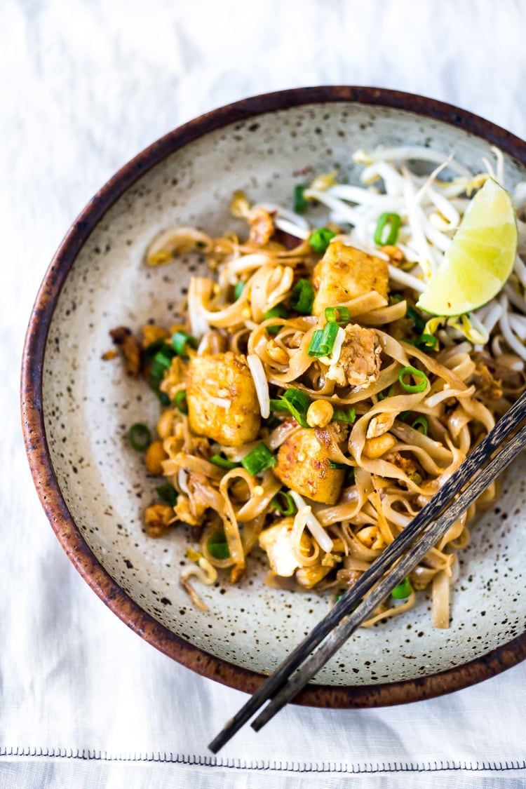

Pad Thai

Description
Pad Thai is a Thai noodle dish made with simple ingredients and can be made with chicken, shrimp or tofu!
Here’s an easy recipe for the best Pad Thai that contains very accessible ingredients and only takes about 15 minutes of actual cooking time, once the ingredients are prepped.
The Pad Thai Sauce is so flavorful and balanced- it is as close as comes to the real deal without having to take a trip to the Asian market.
Ingredients
- 4 ounces dry pad thai noodles (rice noodles)
- Boiling water to cover noodles
- 1 large shallot, finely diced ( much better than onion here)
- 4 chopped garlic cloves
- 1 teaspoon chopped ginger (optional)
- 2 eggs, whisked with a fork with a generous 3-finger pinch salt ( if vegan, leave it out)
- 6–8 ounces tofu, chicken breast or peeled prawns
- salt and pepper to taste
- 2 tablespoons peanut oil, wok oil or coconut oil
- 1 lime
Pad Thai Sauce
- 3 tablespoons fish sauce (see notes- or use vegan fish sauce)
- 3 tablespoons brown sugar (or coconut sugar, palm sugar or regular sugar) see notes
- 3 tablespoons of rice vinegar (or tamarind water– see notes)
- 1 teaspoon soy sauce
Garnish
- Lime wedges
- Fresh bean sprouts
- chili flakes
- chopped scallions
- roasted peanuts
Steps
- COOK NOODLES: Cook noodles according to package instructions (or place rice noodles in a shallow bowl or baking dish and boil enough water to cover them. Cover with boiling water for 7- 8 minutes, until tender, then drain. They don’t have to be totally soft, just bendy and pliable)
- Chop shallot, garlic and ginger and set aside.
- Whisk the two eggs in a bowl with a fork and add a generous, 3-finger pinch of salt. Set aside.
- Make the Pad Thai Sauce Whisk fish sauce, rice vinegar, brown sugar and soy sauce. (see notes) in a small bowl. Set aside.
- Prep and Cook the protein: Chicken: slice chicken into very thin strips and season with salt and pepper. Crispy Tofu: Blot tofu with paper towels pressing down firmly. Cut tofu into ¾ inch cubes, sprinkle with salt and pepper, and for extra crispy, dredge in a little corn starch. Shrimp: Peel and season with salt and pepper. COOK: Sear the seasoned chicken, shrimp or tofu in a wok with hot oil until cooked through over medium-high heat. Set aside, on top of a paper towel, wipe out the pan. Turn heat off.
- STIR FRY the PAD THAI: Gather your chopped shallots, whisked eggs, cooked noodles, cooked protein and Pad Thai sauce around the stove. Heat 2 tablespoons peanut oil in the wok over medium heat, add shallot-garlic-ginger and stir, cooking just a few minutes until golden and fragrant.
- Make a well in the center of the wok, scooting the shallot mixture to the side of the pan, add the whisked eggs. With a metal spatula, scramble them and break them apart into little bits, letting them brown just a little, and incorporate them into the shallots continuing to break them into small bits.
- Add the drained, semi-soft noodles and toss with the egg mixture, stirring, flipping, frying constantly for 3-4 minutes until noodles become soft and pliable.
- Add the Pad Thai Sauce and cook 1 minute. It will smell quite fishy at first – turn your fan on – but it will mellow out perfectly. Add the cooked chicken, tofu or shrimp and turn and toss the noodles for a few more minutes. Cook until the noodles are soft (but still a little chewy) adding just a little water if it seems too dry.
- Toss in the bean sprouts and roasted peanuts (or serve on the side) and sprinkle with chili flakes and scallions. Squeeze with a little lime juice. Taste. Adjust salt, lime and sweetness to your liking adding a pinch of salt, more lime or more a pinch more sugar to taste. Give one more toss and serve immediately. Divide among two plates.
- Garnish with more bean sprouts, fresh scallions, cilantro or basil, chili flakes, lime wedges and roasted crushed peanuts. Or make this Peanut Chili Crunch!